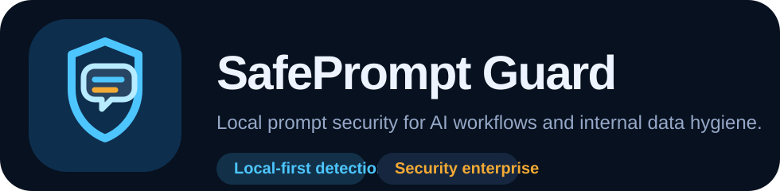
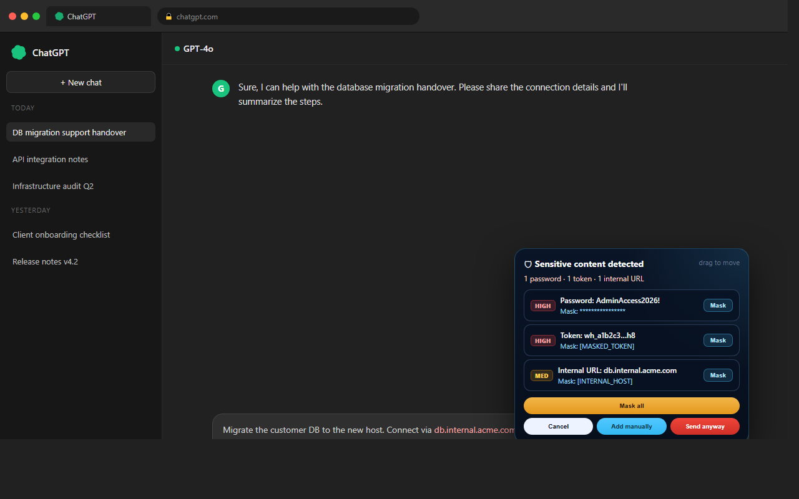
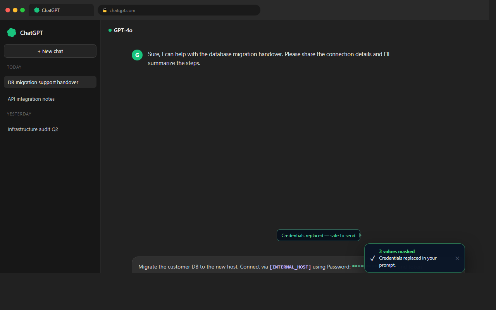
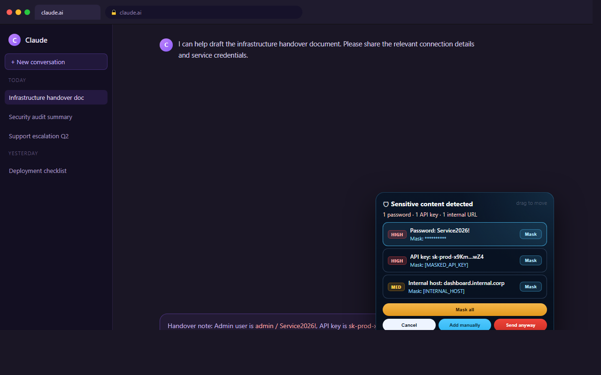
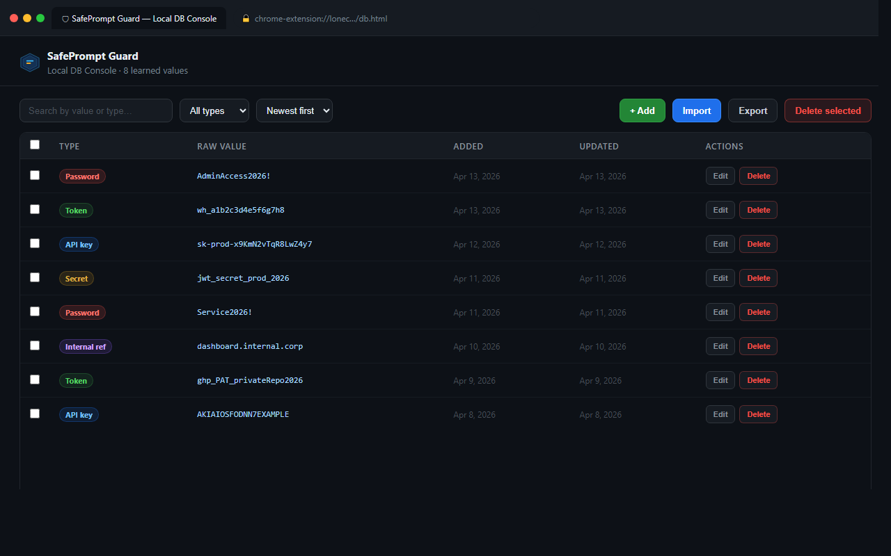
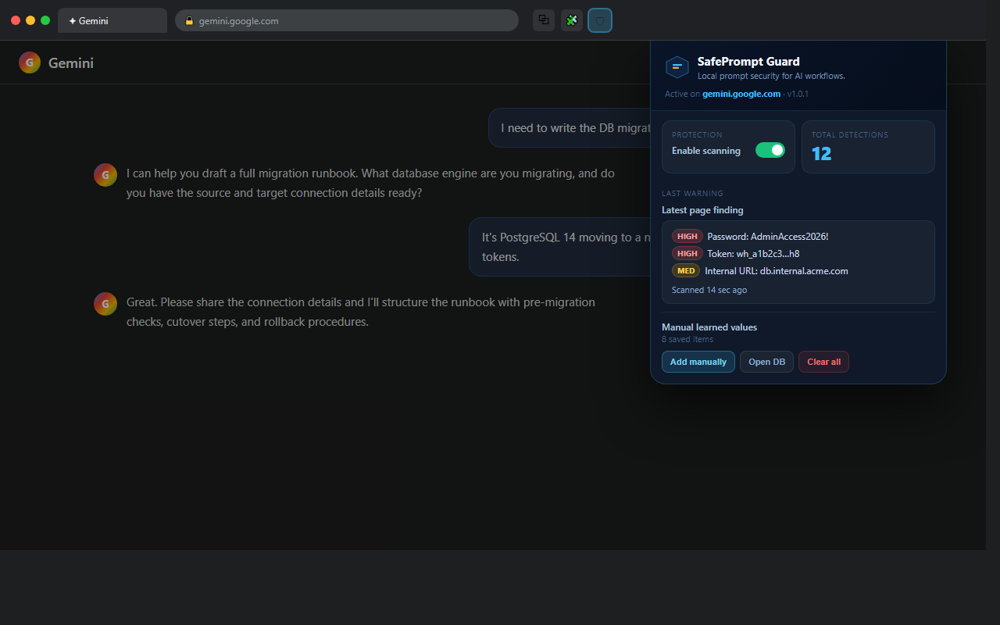

Inline warning flow
Review findings near the send area instead of switching into a large blocking modal.

SafePrompt Guard detects passwords, tokens, internal-only values, and curated common/default credentials directly in the browser, then lets the user review or mask them before send.
Review findings near the send area instead of switching into a large blocking modal.
Mask only the selected finding or step through multiple findings one by one.
Add, edit, search, import, export, and manage learned values that should be caught on future prompts.
Prompt text is analyzed locally on supported AI sites, including structured credentials and internal references.
The inline warning summarizes actionable findings, lets the user highlight them, and keeps the writing flow intact.
Mask specific values immediately or add exact-match entries to the Local DB for future detection.





No account. No backend. No external data upload. Everything runs inside Chrome.